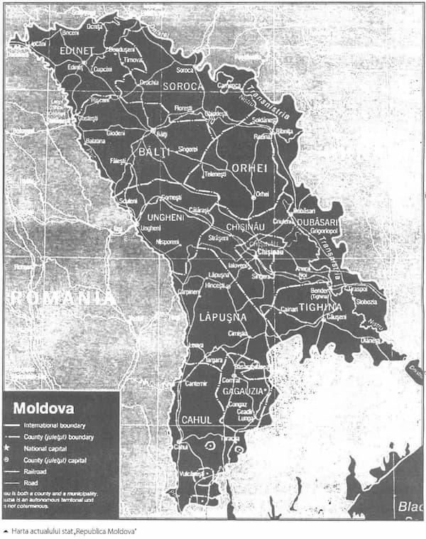

Mult stimatul nostru „slujitor al interesului public” ne asigură că e doar o chestiune de timp momentul în care oligarhii vor dispărea și că odată dispăruți, sau cel puțin fiind cu tentaculele tăiate nu vor mai îndrăzni să miște în fața „cinstitului” și „atotputernicului” Filat:
Tentaculele oligarhilor din Republica Moldova sunt prinse pe anumite instituții, dar ele nu sunt regenerabile, când le tăi dintr-un loc, nu mai apar în altul. De această părere este premierul moldovean, Vlad Filat, care a acordat un interviu pentru hotnews.ro.
Potrivit premierului Filat, Republica Moldova este restanțieră în ceea ce privește implementarea masurilor de demonopolizare pe care și le-a asumat înainte de a avea semnat acordul cu FMI.
„Republica Moldova a avut un regim de guvernare care și-a zidit un sistem pe parcursul a opt ani, care a fost pus într-o anumită formă de a acționa. Nu este simplu să demontezi acest regim în câteva luni de zile. Este un proces care durează, dar avem o singura soluție: reformarea sistemului administrației publice centrale și îmbunătățirea calității celor care funcționează în acest sistem”, crede Filat.
Premierul consideră că puterea oligarhilor din Republica Moldova, care a reieșit din accesul acestora la instrumentele statului, există și astăzi, dar în altă măsură. „Nu sunt în situația în care să spun că aceștia nu mai au acces la anumite instituții. Din păcate, acest fenomen mai există, dar în cu totul altă măsură. Tentaculele lor mai sunt prinse de anumite instituții, însă mă bucur că ele nu sunt regenerabile, când le tai dintr-un loc, ele nu mai apar în altul”, a menționat premierul. (Jurnal de Chișinău)
După ce într-o conferință ne-a uimit cu cunoștințele sale de poloneză, citez „așa cum spun polonezii – bonjour maman”, acum Mihai cel Ghimpu se duce la frații noștri de la Bruxelles să își ia binecuvîntarea și foița cu instrucțiuni pentru următoarea perioadă. E interesant cum se vor descurca cei de acolo cu „poloneza” domniei sale???
Mihai Ghimpu pleacă astăzi la Bruxelles
Președintele interimar al Republicii Moldova, Mihai Ghimpu, pleacă astăzi la Bruxelles, într-o vizită de lucru de o zi.
Vizita lui Mihai Ghimpu fusese anunțată anterior, însă ieri președintele interimar a declarat că nu mai pleacă la Bruxelles, „din cauza unora”, refuzând să spună despre cine este vorba.
În cadrul vizitei, Mihai Ghimpu urmează să aibă întrevederi cu președintele Parlamentului European, Jerzy Buzek, comisarul european pentru extindere și politică de vecinătate, Stefan Fule, și, posibil, cu președintele Comisiei Europene, Jose Manuel Barosso.
Potrivit lui Mihai Ghimpu, discuțiile sale cu oficialii europeni se vor axa pe proiectului noii Constituții, pe depășirea crizei și pe menținerea stabilității. (Jurnal de Chișinău)

Dacă o nouă guvernare va aduce întotdeauna cu sine și o nouă Constituție unde vom ajunge? Și așa șubreda bărcuță a Republicii Moldova e găurită din toate părțile, dacă vom mai avea și o Constituție după cum bate vîntul prin capul sec al conducătorilor, care ne va fi viitorul?
Numirea procurorului general prin decret prezidențial, la propunerea Consiliului Superior al Magistraturii și excluderea denumirii de „tribunal” din articolul cu privire la instanțele judecătorești, acesta fiind înlocuit prin „curte de casație” și „curte de apel”. Acestea sunt unicele modificări în proiectul noii Constituții, care a fost aprobat astăzi definitiv de către Comisia parlamentară pentru reforma constituțională.
Astfel, dacă va fi adoptată o nouă Constituție a Republicii Moldova, termenul „tribunal” nu va mai figura în legea supremă a țării, acesta fiind înlocuit prin „curte de casație” și „curte de apel”. Totodată, procurorul general va fi propus de către Consiliul Superior al Magistraturii și numit în funcție prin decret prezidențial, spre deosebire de prima variantă a articolului respectiv, care spunea că procurorul general este numit prin votul Parlamentului.
Președintele interimar al Republicii Moldova, Mihai Ghimpu, s-a arătat mulțumit de faptul că proiectul noii Constituții a fost definitivat. „Acum avem de ales între două variante. Sau mergem pe calea referendumului, sau îndeplinim recomandările Comisiei de la Veneția”, a spus Mihai Ghimpu. Potrivit acestuia, în cele ce urmează, partidele politice parlamentare vor discuta acest proiect, care, ulterior, va fi expediat Comisiei de la Veneția spre examinare. Mihai Ghimpu a ținut să menționeze că recomandările experților europeni nu poartă un caracter de obligativitate.
Printre principalele prevederi ale proiectului noii Constituții sunt: limba oficială a Republicii Moldova - româna; dreptul de vot – de la 16 ani; alegerea președintelui prin vot direct, de către popor; Constituția, învestită prin referendum; statutul de republică semiprezidențială pentru Republica Moldova. (Jurnal de Chișinău)
Tehnica îndatorării e la ea acasă în Republica Moldova. Interesant e cum își va onora statul toate aceste obligații, cine va profita de pe urma lor. Întrebări al căror răspuns îl vom afla cît de curînd și totuși prea tîrziu.
Republica Moldova va beneficia de o asistență financiară de 2,6 miliarde de dolari sau 1,936 de miliarde de euro, pentru anii 2011 – 2013, din partea donatorilor externi, un document în acest sens fiind semnat astăzi la Bruxelles, între premierul Vlad Filat și comisarul european pentru Extindere și Politică de Vecinătate, Stefan Fule.
Programul de asistență pentru Moldova pentru anii 2011-2013 a fost semnat ca urmare a lucrărilor Ședinței Grupului Consultativ - Forumul „Parteneriat pentru Moldova”, co-prezidată și găzduită de Comisia Europeană și Banca Mondială, la care au participat 32 de instituții bilaterale și 10 organizații multilaterale de dezvoltare.
În cadrul întâlnirii cu oficialii europeni, Guvernul Republicii Moldova și-a reafirmat poziția precum că integrarea europeană reprezintă prioritatea sa de bază.
În alocuțiunea sa, rostită la finalul reuniunii, premierul Filat a menționat că „pleacă acasă, împreună cu colegii săi, cu mult optimism în ceea ce privește viitorul Republicii Moldova”. „Ne întoarcem acasă și cu o mai mare responsabilitate, vrem să vă demonstrăm prin fapte că avem o guvernare eficientă, transparentă, orientată spre nevoile oamenilor”, a menționat premierul.
În final, și oficialul european, Ștefan Fule a menționat că Uniunea Europeană susține plenar programul Guvernului „Relansăm Moldova”. „Pentru Uniunea Europeană, Moldova este mai mult decât un vecin, este un partener apropiat”, a conchis comisarul european. (Jurnal de Chișinău)
Cum istoria e plină de uimitoarea noastră răbdare – guvernatorul BNM a decis că nu ne va mai șoca evoluția leului. Evident după perioada 90 ce ne-ar mai putea mira dar totuși nu vine odată și odată cel puțin o rază de soare prin norul dens al prostiei, mîrșăviei și trădării conducătorilor?
Nu există nicio premisă de șoc în ceea ce privește evoluția leului, a declarat marți, 23 martie, guvernatorul Băncii Naționale a Moldovei, Dorin Drăguțan, solicitat să facă o prognoză a cursului de schimb al monedei naționale în perioada sărbătorilor de Paști.
Dorin Drăguțan a spus că informația privind intrările și ieșirile de valută străină din Moldova denotă o revigorare atât a încasărilor din exporturi, cât și a remitențelor. Au crescut și ieșirile de valută, deoarece se observă o sporire a importurilor, aceasta înseamnă că își revine și consumul, ceea ce constituie un semnal pentru o relansare economică.
„Deocamdată aceste semnale pozitive sunt firave. Totuși, nu văd de unde ar putea să vină presiuni mari asupra leului. Lucrurile pe piața valutară sunt absolut normale, volumul tranzacțiilor este sub nivelul celui înregistrat în martie sau decembrie anul trecut. Nu există motive ce ar genera mari fluctuații”, a declarat guvernatorul.
Dorin Drăguțan a reamintim că, potrivit prognozelor BNM, trendul general de evoluție a leului în anul curent va fi unul de apreciere lină. „Desigur, situația pe piața valutară se dezvoltă în funcție și de situația în ansamblu în economia țării, de unele evoluții externe. Pe parcursul sărbătorilor de Paști oferta de valută, în special oferta de valută în numerar, va crește, dar eu cred că aceasta va fi absorbită de importatori”, a conchis Dorin Drăguțan. (Timpul)
1. Ultimii comuniști ai Europei au asigurat în timpul guvernării lor o creștere economică „durabilă și stabilă” ca un balon de săpun…
Aproape zilnic trec pe lângă extrema de sud a CC-ului (cimitirul central) din Chișinău, unde, după renovarea Memorialului „eliberatorilor”, au crescut ca ciupercile după ploaie zeci de cavouri, adevărate mausolee din beton, granit și marmură pentru viitoarele înhumări ale răposaților aleși. De fiecare dată, mă întreb care să fie oare rostul unor investiții de zeci de mii de dolari, dacă alături de acești investitori mor oamenii ca în timpul Holodomorului moldovenesc. În satul meu natal, Cornova, de exemplu, în această iarnă au decedat de frig, boli și foame 13 oameni și s-a născut doar un singur copil. O familie din trei persoane, care n-a avut bani să procure măcar un lighean de cărbuni, a înghețat toată într-o noapte de ger cumplit. Este satul, care nu i-a lăsat să moară de foame pe Voronin și familia sa în anii când erau în „ilegalitate și săraci, lipiți pământului”. În fruntea gospodăriei colective de atunci se afla un comunist venit din alt sat, pe care Voronin, președintele de mai târziu, l-a trimis ambasador în CSI, având o pregătire diplomatică de gradul zero.
În aceste condiții de genocid au fost aduse mai toate satele noastre, iar liderii kominterniști ai PCRM zilnic fac declarații cu care te năucesc despre așa-zisele „minuni economice și sociale”, realizate de ei în aproape nouă ani de aflare la putere, criticând vehement primele rezultate - mai mult decât vizibile și pozitive - ale actualei guvernări democratice.
Am numărat șapte astfel de „minuni”, cărora comuniștii le fac publicitate pe toate căile, sperând să revină la putere, ca să scape de pușcăriile plângărețe după ei…
Mult trâmbițata de ei creștere economică doar economiștilor de factură comunistă li se pare un progres: în ultimii nouă ani, Produsul Intern Brut al R. Moldova a crescut cu 48,2% sau 4,5% anual. Numai în nouă luni ale lui 2009 - primul an de criză mondială și la noi -, cât economia s-a mai aflat sub presiunea comuniștilor, acest indicator s-a diminuat cu 9%. În 2001, comuniștilor le-a revenit o economie care asigura un volum al PIB-ului, în prețuri comparabile, egal cu cel din anul 1965 și de aproape trei ori mai mic față de anul 1990. După creșterea de 48,2%, biata noastră economie națională, în mari chinuri, a avansat cu cinci ani, de la 1965 la 1970! Adică lozinca de ieri a comuniștilor sovietici „Cincinalul în patru ani!” ei au înlocuit-o cu „Cincinalul în… nouă ani!”.
Cu ritmurile numite mai sus, comuniștii trebuiau să ne mai fericească încă 15 ani, ca să atingem și nivelul anului 1990. De aici, putem deduce și secolul în care R. Moldova va atinge nivelul economic mediu european, dacă astfel de forțe moldo- româno-fobe, retrograde și mincinoase nu vor fi aruncate la groapa de gunoi politic.
Totodată, constatăm că, dacă neocomuniștii asigurau economiei moldovenești ritmurile de creștere cu care au crescut economiile Familiei Voronin, poate că și moldoveni trăiau astăzi ca această familie aleasă… Conform estimărilor noastre, bazate pe dinamica cheltuielilor efectuate de Oleg și publicate în TIMPUL, veniturile lor au crescut de cel puțin 1.500 de ori, adică anual cu 150 la sută. Asemenea ritmuri, demne de Cartea recordurilor Guinness book, nu a cunoscut până acum niciunul din miliardarii lumii… Dar și ritmurile de pauperizare a moldovenilor care au ajuns în scurt timp la cel mai scăzut nivel de trai de pe continentul european sunt demne de Cartea Guinness!
Este anecdotică și stabilitatea economică lăudată de comuniști. Comuniștii iau ca argument al stabilității cele câteva procente de creștere economică în comparație cu anul 2000, când PIB-ul alcătuia doar 34 la sută din cel al anului 1990. Dar, dacă am lua ca argument al stabilității alt indicator, aplicat în întreaga Europă - PIB per locuitor - și comparat cu media Uniunii Europene, chiar și orbii ar vedea ce stabilitate de beton am avut noi în aproape nouă ani de neocomunism. Conform calculelor economiștilor Gr. Belostecinic și C. Guțu, raportul dintre mărimea PIB per locuitor în R. Moldova raportată la media UE a crescut, în opt ani, de la 9,6% în 2001 până la 9,7% în 2008 (pentru comparație: în Bulgaria și România acest raport a crescut în perioada dată de la 28 la 40 la sută). Posibil, doar manualele de teorie economică marxist-leninistă mai pot defini asemenea rezultate ca stabilitate economică… Deocamdată însă, la noi se dezvoltă stabil și accelerat doar economiile Familiei Voronin și economiile altor câtorva kominterniști din fruntea PCRM… (Timpul)